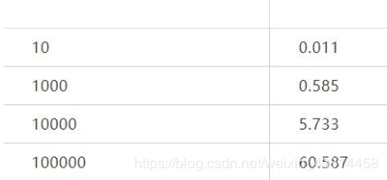

假如说我有这样一个表，我想往这个表里面插入大量数据
1 CREATE TABLE IF NOT EXISTS `user_info` (
2 `id` int(11) NOT NULL AUTO_INCREMENT COMMENT '自增主键',
3 `name` varchar(255) NOT NULL default '' COMMENT '姓名',
4 `age` int(11) NOT NULL default '0' COMMENT '年龄',
5 PRIMARY KEY (`id`)
6 ) ENGINE=InnoDB DEFAULT CHARSET=utf8 COMMENT='用户信息表';
批量插入
方法一、使用for循环插入
在往mysql插入少量数据的时候，我们一般用for循环
1 $arr = [
2 [
3 'name' => 'testname1',
4 'age' => 18,
5 ],
6 [
7 'name' => 'testname2',
8 'age' => 19,
9 ],
10 [
11 'name' => 'testname3',
12 'age' => 18,
13 ],
14 ];
15
16 $servername = "localhost";
17 $port = 3306;
18 $username = "username";
19 $password = "password";
20 $dbname = "mytestdb";
21
22 // 创建连接
23 $conn = new mysqli($servername, $username, $password, $dbname, $port);
24
25 // 检测连接
26 if ($conn->connect_error) {
27 die("connect failed: " . $conn->connect_error);
28 }
29
30 $costBegin = microtime(true);
31
32 foreach($arr as $item) {
33 $sql = sprintf("INSERT INTO user_info (name, age) VALUES ( '%s', %d);", $item['name'], (int)$item['age']);
34 if ($conn->query($sql) === TRUE) {
35 echo "insert success";
36 } else {
37 echo "Error: " . $sql . "<br>" . $conn->error;
38 }
39 }
40
41 $costEnd = microtime(true);
42 $cost = round($costEnd - $costBegin, 3);
43 var_dump($cost);
44
45 $conn->close();
假如说要批量插入大量数据，如果还用for循环的办法插入是没有问题的，只是时间会比较长。对比一下插入少量数据与插入大量数据，使用上面的for循环插入耗费的时间：条数时间（单位：秒）

方法二、使用insert语句合并插入
mysql里面是可以使用insert语句进行合并插入的，比如
1 INSERT INTO user_info (name, age) VALUES ('name1', 18), ('name2', 19);表示一次插入两条数据
2
3 $arr = [
4 [
5 'name' => 'testname1',
6 'age' => 18,
7 ],
8 [
9 'name' => 'testname2',
10 'age' => 19,
11 ],
12 [
13 'name' => 'testname3',
14 'age' => 18,
15 ],
16 // 此处省略
17 ……
18 ……
19 ];
20
21 $servername = "localhost";
22 $port = 3306;
23 $username = "username";
24 $password = "password";
25 $dbname = "mytestdb";
26
27 // 创建连接
28 $conn = new mysqli($servername, $username, $password, $dbname, $port);
29
30 // 检测连接
31 if ($conn->connect_error) {
32 die("connect failed: " . $conn->connect_error);
33 }
34
35 $costBegin = microtime(true);
36
37 if (!empty($arr)) {
38 $sql = sprintf("INSERT INTO user_info (name, age) VALUES ");
39
40 foreach($arr as $item) {
41 $itemStr = '( ';
42 $itemStr .= sprintf("'%s', %d", $item['name'], (int)$item['age']);
43 $itemStr .= '),';
44 $sql .= $itemStr;
45 }
46
47 // 去除最后一个逗号，并且加上结束分号
48 $sql = rtrim($sql, ',');
49 $sql .= ';';
50
51 if ($conn->query($sql) === TRUE) {
52 } else {
53 echo "Error: " . $sql . "<br>" . $conn->error;
54 }
55 }
56
57 $costEnd = microtime(true);
58 $cost = round($costEnd - $costBegin, 3);
59 var_dump($cost);
60
61 $conn->close();
下面看一下少量数据与大量数据的时间对比。从总体时间上，可以看出insert合并插入比刚才for循环插入节约了很多时间,效果很明显条数时间（单位：秒）
如果你觉得数组太大，想要减少sql错误的风险，也可以使用array_chunk将数组切成指定大小的块，然后对每个块进行insert合并插入.
phper在进阶的时候总会遇到一些问题和瓶颈，业务代码写多了没有方向感，不知道该从那里入手去提升，对此我整理了一些资料，包括但不限于：分布式架构、高可扩展、高性能、高并发、服务器性能调优、TP6，laravel，YII2，Redis，Swoole、Kafka、Mysql优化、shell脚本、Docker、微服务、Nginx等多个知识点高级进阶干货需要的可以免费分享给大家，需要的（点击→）我的官方群677079770